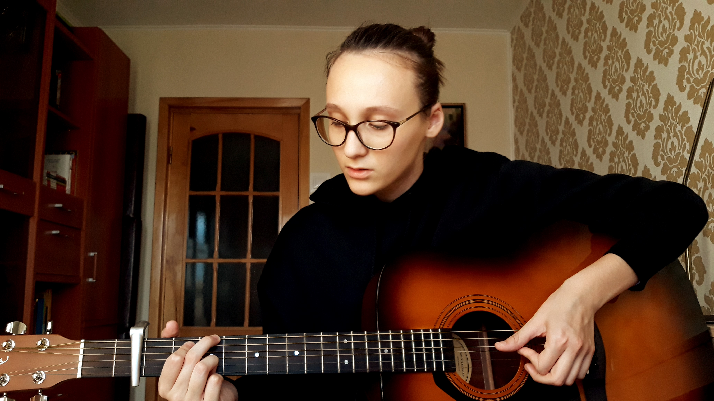
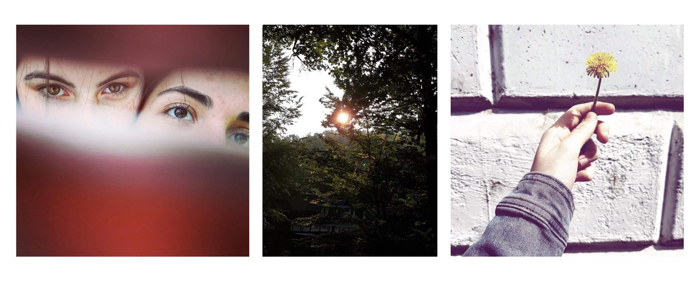
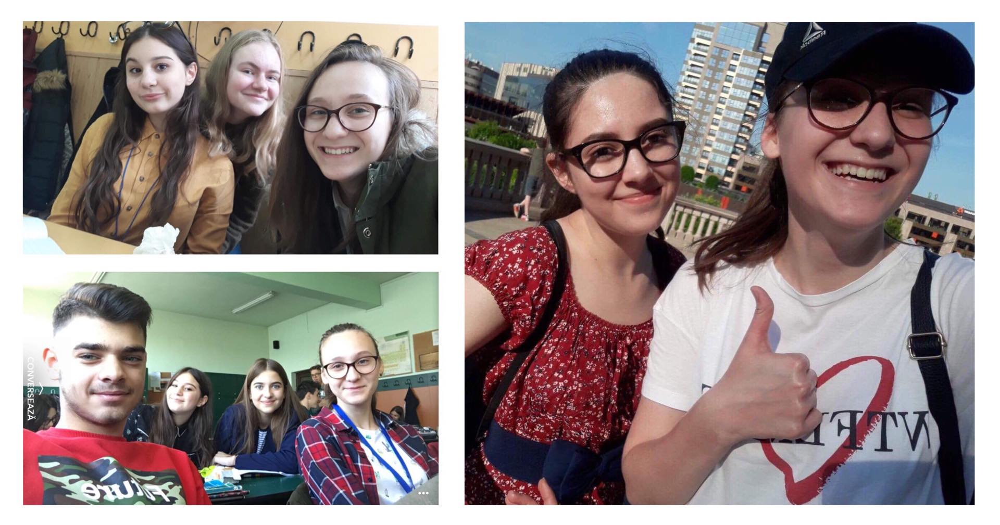

Cea mai mare pasiune a mea este muzica. De mică îmi placea să o ascult pentru că simțeam cum mă liniștea și mă facea să intru într-o lume nouă, a mea. Odată ce am crescut, am vrut să mă afund tot mai mult în această lume. Am început să cânt câteva acorduri la chitară, iar acum pot cânta melodii întregi și sunt foarte mandră de mine în acest sens. Și așa am reușit să compun și prima mea melodie numită The sun rises.

De pe la vârsta de paisprezece ani, mi-am creat pasiunea de a fotografia. Iubesc tot ce ține de natură și mi-ar plăcea să surprind cât mai multe momente vii, dar neavând un aparat foto mă cam împiedică. Așa că încă încerc să mă dezvolt pe acest plan.

Ador să socializez și să petrec timpul cu prietenii mei, atât la școală cât și în timpul liber. Dar ce iubesc cel mai mult este să îi fac fericiți și să le schimb starea în bine, făcând lucruri mici cu un impact mare. Prietenii sunt importanți pentru mine pentru că mă fac să mă simt mai bine și mă încurajează să fac dau tot ce am mai bun ca să reușesc.
